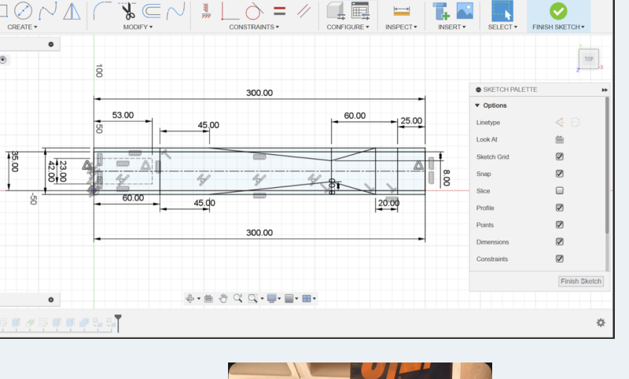
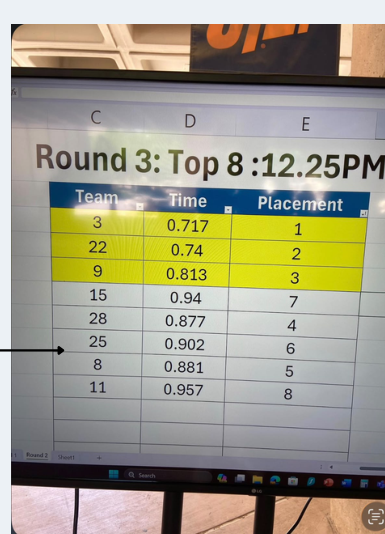

ENGINEERING PROJECT
Wooden CO₂ Dragster
Tools: Fusion 360 | Woodworking Tools | Prototyping
Objective
Designed and built a wooden CO₂-powered dragster to achieve high speed while maintaining stability and overall performance in a student competition.
Design, Modeling & Fabrication
We used Fusion 360 to create a 3D model, revised dimensions and features to improve performance, and produced engineering drawings to guide fabrication. After completing the CAD model, we manufactured and refined the wooden prototype with a focus on aerodynamics and weight.
Testing & Improvements
We conducted multiple test runs to evaluate speed and performance. Based on the results, we adjusted the design and physical model before the final competition.
Skills Demonstrated
Fusion 360 · CAD Modeling · Engineering Drawings · Prototyping · Fabrication · Testing & Evaluation · Teamwork · Problem Solving

